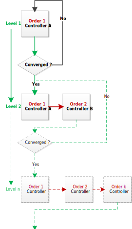

The Control loop¶
Elements of a network which contain a control loop can be modelled as so called Controller.
They implement a controlling mechanism as well as a convergence check and are being registered at
the used network net.controller. When a simulation is being invoked through runpp(net, run_control=True), the run_control() method iteratively
calls the controlling-method control_step() on each initialized controller until all of them are converged. The possibility to operate
different controllers in a specific sequence is given by the variables net.controller.order and net.controller.level, which
we will go into later. This control_step() can be calculated for a single point in time as well as a simulation of discrete consecutive points in time using the timeseries module
method run_timeseries(). The following picture describes the dependence of both methods.
См.также
{kind=link}
Cascade control¶
Each Controller has the variables order and level with the default value 0. Both variables enable the possibility to operate different controllers in a specific sequence. This operation is called a cascade control. Following flow chart explains the general usage.
Controller |
Order |
Level |
|---|---|---|
Controller A |
1 |
1,2 |
Controller B |
2 |
2 |